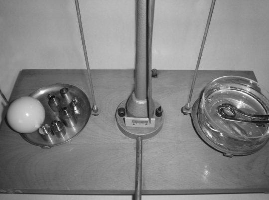
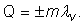

Elemente de termodinamică. |
Transformări de stare de agregare |
Fierberea apei este un proces care se petrece zilnic în bucătărie. Dar arareori avem răbdarea şi disponibilitatea să
observăm cu atenţie ce se întâmplă. Astfel, multe detalii rămân neobservate, multe lucruri neînţelese şi multe şanse de
progres ratate.
 Activitatea experimentală 4-1
Activitatea experimentală 4-1
Investighează fierberea apei la presiune atmosferică normală. Lucrează în echipă.
Pasul 1. Puneţi apă într−un pahar Berzelius şi adăugaţi câteva cioburi de porţelan poros (acestea
vor face fierberea mai puţin violentă). Puneţi
în pahar un încălzitor electric cu imersie (termoplonjor). Asiguraţi−vă că partea metalică a termoplonjorului este
imersată în apă. Adăugaţi apă dacă este nevoie. Puneţi ansamblul pe talerul unei balanţe, inclusiv cordonul încălzitorului.
Pasul 2. Fixaţi pe suportul talerului un termometru de laborator (care poate măsura temperaturi în jurul a
100°C), astfel încât bulbul termometrului să fie imersat în apă, aproape de suprafaţa liberă a acesteia (figura 4−1).

Figura 4-1. Dispozitivul experimental pentru investigarea fierberii apei la presiune
atmosferică normală.
Pasul 3. Echilibrati balanţa (cordonul încălzitorului fiind pe talerul balanţei).
Pasul 4. Conectaţi încălzitorul la reţea − ignoraţi deocamdată dezechilibrarea balanţei. Observaţi
cu atenţie ce se întâmplă şi notaţi constatările remarcabile.
Pasul 5. Cronometraţi două minute din momentul în care apa începe să fiarbă (bulele formate în lichid se
sparg zgomotos la suprafaţa acestuia). După două minute, deconectaţi încălzitorul şi aşezaţi cordonul acestuia pe
talerul balanţei.
Pasul 6. Reechilibrati balanţa şi calculaţi câtă energie este necesară pentru vaporizarea prin fierbere
a unei cantităţi de apă cu masa 1 kg.
Pe măsură ce temperatura apei creşte, pe pereţii interiori ai paharului apar mici bule de gaz, formate din molecule de azot
şi oxigen care au fost dizolvate în apă. Prin suprafaţa acestor bule se produce vaporizarea apei, mărind volumul acestora.
Când bulele de gaz şi vapori sunt suficient de mari, acestea se desprind şi urcă spre suprafaţa lichidului.
Întâlnind apă mai rece, vaporii din bule condensează şi gazul se dizolvă din nou − bulele dispar. Totuşi, acestea
contribuie la încalzirea straturilor superioare ale apei, transferând căldura de la încălzitor în întreg volumul lichidului.
Când temperatura apei se apropie de 100°C, bulele cu vapori devin din ce în ce mai mari şi ajung tot mai aproape de
suprafaţa apei. La 100°C, bulele ajung la suprafaţa apei şi se sparg zgomotos − apa fierbe. Vaporizarea are loc
de acum în tot volumul lichidului.
 Numim fierbere procesul de vaporizare în tot volumul
lichidului.
Numim fierbere procesul de vaporizare în tot volumul
lichidului.
Tot timpul fierberii, temperatura rămâne constantă, deşi apei îi este furnizată în permanenţă energie sub formă de
căldură de la încălzitor.
Numim căldură latentă de vaporizare cantitatea de căldură
necesară vaporizării unui lichid.
Căldura transferată în timpul vaporizării (căldura latentă) determină "ruperea" legăturilor dintre moleculele lichidului.
Numim căldură latentă specifică de vaporizare cantitatea de
căldură necesară vaporizării fiecărui kilogram dintr−o cantitate de lichid.
Tabelul 4−1 prezintă temperaturile de fierbere la presiune atmosferică normală şi căldurile latente specifice
de vaporizare pentru câteva substanţe.
Tabelul 4-1. Temperaturi de fierbere (Tf) la presiune atmosferică normală şi călduri
latente specifice de vaporizare (λv).
| Substanţa |
Tf
(K) |
λv
(kJ/kg) |
| azot |
77 |
201 |
| oxigen |
90 |
213 |
| alcool |
351 |
854 |
| apă |
373 |
2260 |
| mercur |
630 |
272 |
 Provocarea 4-1
Provocarea 4-1
Compară căldura latentă specifică de vaporizarea a apei cu cea determinată de tine în activitatea experimentală 4−1.
Identifică eventualele surse de erori.
Poţi calcula cantitatea de căldură schimbată cu mediul în timpul vaporizării sau condensării unei cantităţi de masă
m a unei substanţe, astfel:

Vei folosi semnul "+" în cazul vaporizării (căldură primită) şi semnul "-" în cazul condensării (căldură cedată).
Pentru a părăsi lichidul în oricare parte a sa (nu numai prin suprafaţa liberă, ca în cazul evaporării), presiunea
vaporilor saturanţi trebuie să egaleze presiunea la care se află lichidul.
Un lichid fierbe atunci când presiunea vaporilor săi saturanţi este
egală cu presiunea la care se află lichidul.
Modificând presiunea la care se află lichidul, se modifică şi temperatura la care apa fierbe
(vezi tabelul 3−1).